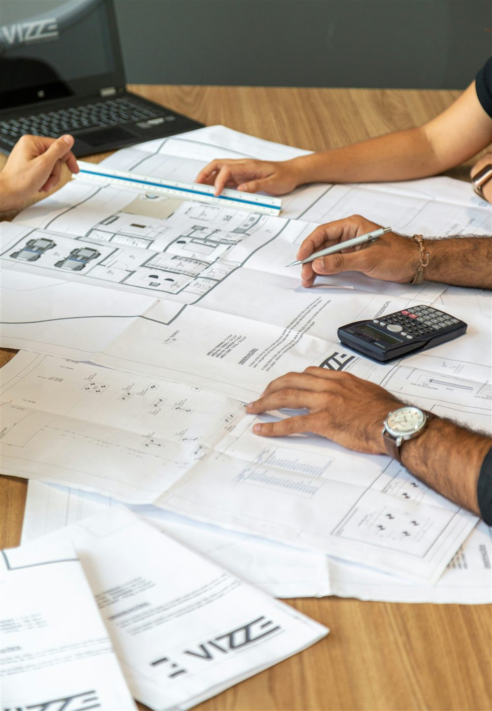

À quoi sert une note de calcul béton armé ?
La note de calcul est le document qui justifie techniquement un projet de structure en béton armé. Elle démontre, chiffres à l'appui, que chaque élément porteur (fondation, poteau, poutre, dalle, voile) résiste aux charges qu'il devra supporter pendant toute la durée de vie de l'ouvrage, sans se déformer excessivement ni se rompre.
Ce n'est pas un document facultatif ni une simple formalité administrative. C'est la pièce technique qui relie les plans d'architecte à la réalité physique du chantier : elle fixe les sections de béton, les diamètres et les quantités d'acier, et sert de base à l'établissement des plans de coffrage et d'armatures.
Une note de calcul n'est pas un empilement de formules. C'est une démonstration structurée : hypothèses de départ, charges appliquées, vérifications réglementaires et conclusions. Un maître d'ouvrage n'a pas besoin de comprendre chaque équation pour en suivre le raisonnement général.
Ce que contient une note de calcul
Une note de calcul béton armé suit toujours la même trame, quel que soit le projet :
- Les hypothèses générales : normes appliquées, caractéristiques des matériaux, classes d'exposition, catégorie du bâtiment.
- La descente de charges : le cheminement des charges permanentes et d'exploitation depuis la toiture jusqu'aux fondations.
- Le dimensionnement de chaque élément : semelles, poteaux, poutres, dalles, voiles, avec leurs sections de béton et leurs armatures.
- Les vérifications complémentaires : flèches admissibles, fissuration, stabilité d'ensemble.
- Les annexes de calcul, souvent issues d'un logiciel de calcul aux éléments finis, qui détaillent les notes de chaque barre ou panneau.
Ce document se lit donc comme un dossier, du général vers le particulier : d'abord ce qui s'applique à tout le bâtiment, puis élément par élément.
Les hypothèses qui conditionnent tout le calcul
Avant tout dimensionnement, l'ingénieur fixe un socle d'hypothèses. Ce socle détermine tout le reste du calcul, et une erreur à ce stade se répercute sur l'ensemble du document :
- La résistance caractéristique du béton (par exemple C25/30 ou C30/37), qui dépend de la formulation retenue.
- La nuance des aciers (généralement B500A ou B500B) et leur limite d'élasticité.
- Les classes d'exposition (XC1 à XC4, XS, XA selon l'environnement), qui conditionnent la durabilité et l'enrobage des armatures.
- La catégorie d'usage du bâtiment (habitation, bureaux, commerce, stockage), qui fixe les charges d'exploitation selon l'Eurocode 1.
- La nature du sol, issue de l'étude géotechnique, qui conditionne le type de fondation retenu.
Les combinaisons d'actions qui pilotent ensuite chaque vérification proviennent de l'Eurocode 0 (NF EN 1990). Le tableau ci-dessous résume les principales combinaisons utilisées en béton armé.
| État limite | Combinaison type | Ce qu'elle vérifie |
|---|---|---|
| ELU fondamental | 1,35 G + 1,5 Q | Résistance de la structure (rupture, flambement) |
| ELU accidentel | G + Q + A | Résistance sous action accidentelle (choc, incendie) |
| ELS caractéristique | G + Q | Ouverture des fissures, contraintes limites |
| ELS quasi permanent | G + ψ2 Q | Flèches à long terme |
Le dimensionnement, élément par élément
Une fois les hypothèses et la descente de charges posées, chaque élément structurel fait l'objet de vérifications spécifiques selon l'Eurocode 2 (NF EN 1992-1-1). Ces vérifications ne sont pas identiques d'un élément à l'autre : une semelle et une poutre ne travaillent pas de la même façon.
Un ratio de travail proche de 100 % n'est pas une anomalie. Un élément correctement dimensionné affiche souvent un taux de travail élevé : c'est le signe d'un dimensionnement économique, pas d'un manque de marge. La marge de sécurité est déjà intégrée dans les coefficients partiels appliqués aux charges et aux matériaux.
Comment lire les résultats sans être ingénieur
Un maître d'ouvrage n'a pas à vérifier les calculs, mais il peut suivre la logique du document. Trois repères suffisent :
- La conclusion de chaque vérification : chaque section se termine par un constat de type « vérifié » ou par la section finalement retenue. C'est le résultat qui compte, pas le détail intermédiaire.
- Les sections et ferraillages retenus : ce sont ces valeurs qui se retrouvent ensuite, telles quelles, sur les plans de coffrage et d'armatures. Toute incohérence entre la note et les plans doit être signalée.
- Les hypothèses de départ : elles doivent correspondre au projet réel (usage du bâtiment, nature du sol, zone géographique). Une hypothèse erronée invalide tout le reste, même si les calculs qui en découlent sont mathématiquement exacts.
En pratique, un dialogue direct avec le bureau d'études reste le moyen le plus efficace de comprendre les points qui méritent attention, sans avoir à décortiquer chaque page.

Qui exige la note de calcul, et quand
La note de calcul n'est pas un document que l'on produit par principe : elle est demandée à plusieurs étapes du projet, par des interlocuteurs différents.
- Le bureau de contrôle, lorsqu'il est missionné, l'exige pour valider la conformité de la structure avant le début des travaux.
- L'assureur en garantie décennale s'appuie sur son existence et sa cohérence pour couvrir l'ouvrage.
- L'entreprise de gros œuvre en a besoin pour établir ses plans d'exécution et son métré d'acier.
- Certains services instructeurs, notamment dans les DOM-TOM en zone sismique, peuvent exiger des pièces techniques associées lors du dépôt du permis de construire.
Dans tous les cas, elle doit être établie avant le démarrage des travaux de gros œuvre, jamais après coup pour justifier un ouvrage déjà coulé.
Comment MH Structure vous accompagne
MH Structure établit des notes de calcul béton armé claires et complètes, conformes à l'Eurocode 2, pour tout type de projet, en France comme dans les DOM-TOM :
- Descente de charges détaillée depuis la toiture jusqu'aux fondations.
- Dimensionnement de chaque élément porteur, avec justification complète.
- Rédaction lisible, structurée pour faciliter les échanges avec le bureau de contrôle, l'entreprise et le maître d'ouvrage.
- Suite logique avec les plans de coffrage et d'armatures issus directement des résultats retenus.
Un projet à lancer ? Transmettez-nous vos plans d'architecte et votre étude de sol : nous établissons la note de calcul béton armé et les plans d'exécution associés, dans les délais de votre chantier. Devis gratuit sous 48h.
Photos : Sergey Zolkin, Aaron Lefler, Pedro Miranda — via Unsplash